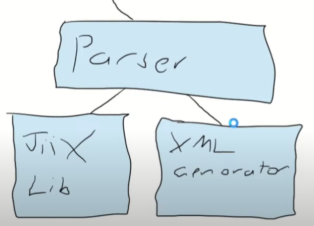

Biography
Technofeind
I am a researcher looking at how to augment human vision past the point in to the relms of science fiction.
I want find methods of using sensors to see though solid matter and be able to use wearable computers to see though them intivitively.
However, I am interested in any areas of computing ranging from cutting edge graphics, cloud computing, drones and sensor fusion, to technolgical art and AI.
Professionally I am focused on building systems that push the boundries of what is possible and I am focused on rapidly prototyping anything required for these.
Overall I am interested in any project that aims at having me push my boundries beyound what I belive possible and to help bring inovation in XR to the point where the unknown is known.
My Name

Having grown up on a farm I have several tools and tallents outside of IT.
My early childhood I spent a lot of time learning how to maintain engines, and build and engineer farm machinery.
I love wood working and I am trained painter decorator signwriter.
I have spent ten years in the constuction industry where I have managed teams up to 40 people orginised shop fits and competed several high profile projects.
Overall, I love learning new things and I am always trying to improve my skills past the point they are at.
I am tallented at:
XR Engineering
Human Computer Interaction Researcher/Designer
Software Engineering
Graphics Engineering
Network Engineering
Writing
Public Speaking
MY PUBLICATIONS
A Bunch of Scientic Papers I have published.
Click on the titles to download a preprint of them or click on the images to make them bigger
Mixed, Augmented and Virtual reality technologies are burgeoning with new applications and use cases appearing rapidly. This chapter provides a brief overview of the fundamental display presentation methods; head-worn, hand-held and projector-based displays. We present a summary of visualisation methods that employ these technologies in the medical domain with a diverse range of examples presented including diagnostic and exploration, intervention and clinical, interaction and gestures, and education.
When merging physical and virtual objects with optical see-through augmented reality there is little research that has focused on x-ray vision visualizations considering depth perception. We investigate partial occlusion visualizations when merging visual cues and real-world objects to explore the effect of the visualizations with a proce-dural placement task. We adapted existing x-ray visualization techniques designed for Video See-Through (VST) Augmented Reality to operate on Optical See-Through (OST) devices and investigated how these techniques affect accuracy in a placement task within arms reach. We evaluate the visualizations' impact on accuracy when user movement is unrestricted and report the perceived usability and mental load of each visualization. Our findings indicate that although the type of x-ray visualization is important, the presence of other virtual objects in the scene appears to have a stronger impact on the users' accuracy in placing objects and user experience.
Doctorial Concortium Paper
Augmented Reality’s ability to create visual cues that extend reality allows for many new abilities to enhance the way we work, problem solve and evaluate activities. Combining the digital and physical world’s information requires new understandings of how we perceive reality. The ability to look through physical objects without getting conflicting depth cues (X-Ray vision) is one challenge that is currently an open research question. The current research states several methods for improving depth perception such as providing extra occlusion by utilizing X-ray vision effects [4], [11], [12], [18], [23]. Currently, there is a lack of knowledge around this space into how and why some of these aspects work or the different strengths that using these techniques can offer. My research aims at developing a deeper understanding of X-Ray vision effects and how they can and should be used.
This chapter explores the use of augmented reality (AR) enabled X-ray vision (XRV) in immersive environments. AR XRV is the ability to render a virtual object as if it is behind or encapsulated in a real-world object. For example, a user may look at a wall in the real world to see what is inside or behind the wall with the use of augmented reality. Seamlessly merging virtual objects with the real world is challenging as virtual objects in augmented reality are typically rendered in front of the real world causing a depth mismatch. The mismatch in depth does not accurately portray the virtual object in the real world and may lead to perception problems when augmenting the real world with virtual information. This review provides an overview of the existing techniques, applications, and devices that provide XRV in immersive environments and summarizes the current research challenges. The emergent nature of XRV in immersive environments is highlighted emphasizing the need to comprehend the challenges and opportunities of AR-enabled XRV. The overview presented in this chapter will assist researchers in identifying challenges as the technology necessary for XRV within the metaverse emerges as a refined capability and accepted convention.
In this demonstration, we invite participants to view several objects’ internal structures using direct volumetric rendering with X-ray vision techniques to understand the underlying structure. This is viewed in a Hololens 2 Optical See Through (OST) Augmented Reality (AR) display. Volumetric Rendering and X-ray Vision are two methods that can show the internal structure of a real-world object, but neither of these methods has been commonly seen using OST AR. We present a platform capable of generating volumetric datasets in a range of situations and accurately demonstrate two Illustrative Visual Effects (Stippling and Cross Hatching) that can be used for X-ray vision in AR.
Conference Paper

Volumetric data is commonly used to understand the structure of an object, like the human body, underground structures, or weather data. However, it is difficult to use this data as it requires expensive equipment and is difficult to automate. This data is expensive to create and catalogue on a large enough scale for a controlled study. We present a solution to this challenge by releasing an open-sourced system to create volumes solely designed for user studies for immersive experiences displayed through a Virtual Reality (VR) or Augmented Reality (AR) headset. By utilizing a system like this, we not only have a clear understanding of how a study can be received in Mixed Reality (MR), but it is possible to have a high level of control over the data, allowing for a higher degree of flexibility in the underlying data design. To facilitate this, we have designed a modular system designed to generate and validate volumes, adhere to a rule set interact within them from a VR or AR interface and evaluate the types of volumes that could be formed.
PROJECTS
Projects that were not published including the output of private research. Various Industiral Demo's and some video games I made or contributed to.
Titles will link to public information relating to these projects (Where the information is publicly disclosed and unrestricted by confidentiality obligations).

Handwriting to SysML or the Automatic SysML Project
This was a project done in collaboration with Lockheed Martin as a Unisa Houners project winner the best project of the year award for the department of Information Technology and Maths and anything other than high level information is concidered confiential.
This system allowed someone to use handwritng on a smartboard or touch interface to create SysML diagrams with ease for use of board meetings and various meetings.
By using handwriting recondition and decting the presence of certain shapes text located within the proximity of the text and how it can be utalized.
This system ended up proving that this technology could be replicated with little to no real issues.
A short presention describing this system can be found at : (
https://youtu.be/8jEUDPYqnmY?si=oOCuSBTE4tR-BGzp
)
Holographic Overlay Project
This project took place at Siemens Healthineers in forchiem and no information is publicly avalible on this project.
I investigated methods of moving form a 2D interface to a 3D inferface when operating a CT machine.
This investigation took place of created a interface designed to work wihtin a paitent using a holoLens that could allow a in depth checks on data
This showcased limations with the systems which still needed to be refined on a system level before this concept could be concidered.
Autostereoscopic Direct Volume Rendering
This was done in collaboration with Unisa's IVE Centre (Wearable Computing Lab).
Based on the theory that when using a 3D display you should be displaying 3D data this system looked at prototyping a autostereoscopic display along side a tradional 2D display.
This was done with the aim of determining if there is a difference between how surgens react to a 3D display compared to a traditional slice based monitor.
While displaying the graphics in 3D a seperate display would produce a 2D represention which giving control over the visulization to a doctor allowing them to illusutrate the visulization to a paitent or a crowd.
This recived a public unvaling at AUS Med Tech.
Happy Home Designer
In a collaboration with staff and students of unisa's IVE I aided the creation of an award winning house building game that showcased how the real world could be affected by as their desgions affect the real world and climate change.
During this game I took on the roles of Team Lead, Software Engineer, Auduio Engineer, and also helped to produce the footage which was seen publicly.
A video of this video can be found at this link: (
https://youtu.be/ye3plPCnFLU
)